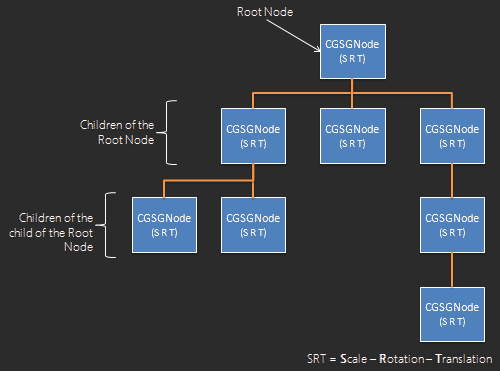

The power of the framework is in its design:
{{project.name}} does not render anything by itself, but provides a
framework and a lot of features to help you rendering what you need !
That's the big difference with other tools: you won't never be limited to what the
framework provides !
Of course, there are a lot of cool and useful already
existing extensions, and you can build
complete games and applications just with them:
The CGSGNode class is the base class for any displayed items on the screen.
Everything in the graph is a CGSGNode or inherit from it (ie: is an extension):

The CGSGNode class encapsulates a lot of properties and methods, including a "render" method. This one doesn't do anything, it has to be overrided by inherited classes.
{{project.name}} is an OOP tool, so to inherit from CGSGNode, a class has to extend
CGSGNode.
This is done simply like this:
var CustomNode = CGSGNode.extend(
{
//constructor.
// You can specify any parameters you need
initialize : function(x, y, width, height) {
//CGSGNode constructor takes only 2 parameters: x & y
this._super(x, y);
//resize your node if needed
this.resizeTo(width, height);
/**
* @property classType
* @readonly
* @type {String}
*/
this.classType = "CustomNode";
//add all other attributes you need
...
},
/**
* Custom rendering.
* You must define this method and declare inside what is the rendering loop
* for this node.
* Here we will just draw a square
* @method render
* @override
* @protected
* @param {CanvasRenderingContext2D} context the context into render the node
* */
render:function (ctx) {
/**
* Set color for this zone.
* Colors are managed with CSS and are stored into "this.bkgcolors" attribute, which is an array.
* Following lines are already managed by the framework and are set here just as an example.
*/
//ctx.globalAlpha = this.globalAlpha;
//if (!cgsgExist(this.bkgcolors[1])) {
// ctx.fillStyle = this.bkgcolors[0];
//}
//else {
// var gradient = ctx.createLinearGradient(0, 0, 0, this.dimension.height);
// for (var i = 0, len = this.bkgcolors.length ; i < len ; i++)
// gradient.addColorStop(i, this.bkgcolors[i]);
// ctx.fillStyle = gradient;
//}
//
//if (this.lineWidth > 0) {
// ctx.strokeStyle = this.lineColor;
// ctx.lineWidth = this.lineWidth;
//}
//
//this._applyShadow(ctx);
//we draw the rect at (0,0) because the framework has already translated the context
// to the correct position
ctx.fillRect(0, 0, this.dimension.width, this.dimension.height);
},
/**
* Return a copy of this node
* @method copy
* @override
* @return {CGSGNodeSquare} a copy of this node
*/
copy:function () {
var node = new CustomNode(this.position.x, this.position.y,
this.dimension.width, this.dimension.height);
//call the super method
node = this._super(node);
return node;
}
}
);
Use your node as you use any node: by instanciating it :)
Example:
createScene : function () {
//first, define an arbitrary node as root node
var rootNode = new CGSGNode(0, 0, 0, 0);
this.sceneGraph.addNode(rootNode, null);
//X, Y, WIDTH, HEIGHT
var square = new CustomNode(20, 20, 150, 150);
//you can use CGSGNode properties
square.isDraggable = true;
square.isResizable = true;
square.globalAlpha = 0.8;
//custom your node by overriding CSS declaration
square.bkgcolors[0] = "lightgray";
//add your square as child of the root node
rootNode.addChild(square);
//instanciate a second CustomNode
var square2 = new CustomNode(200, 200, 20, 35);
rootNode.addChild(square2);
}
A sky node is a good example, I think: complete, easy to understand and easy to extend to learn by yourself :)
var SkyNode = CGSGNode.extend({
initialize: function () {
this._super(0, 0);
//resize to full screen
this.resizeTo(CGSG.canvas.width, CGSG.canvas.height);
//we may want to add a yellow sun. Just add a yellow circle :)
var sun = new Circle(100, 100, 30); // centerX, centerY, radius
this.addChild(sun);
//add a bit of optimization by avoiding useless event on it
this.isTraversable = false;
// because we won't never modify the display of our node, put it in cache
this.setPrecomputed(true);
},
render: function (context) {
// a sky is a gradient from blue (top) to white (bottom)
var gradient = context.createLinearGradient(0, 0, 0, this.dimension.height);
gradient.addColorStop(0, "#48A9FF");
gradient.addColorStop(1, "#FFFFFF");
context.fillStyle = gradient;
//if we use CSS, we may just remove the 4 lines above and just declare CSS style something like:
//CSS file:
//.sky {
// background: -webkit-linear-gradient(#FFFFFF, #48A9FF); /* For Safari */
// background: -o-linear-gradient(#FFFFFF, #48A9FF); /* For Opera 11.1 to 12.0 */
// background: -moz-linear-gradient(#FFFFFF, #48A9FF); /* For Firefox 3.6 to 15 */
// background: linear-gradient(#FFFFFF, #48A9FF); /* Standard syntax */
//}
//
// main.js file:
//skyNode.setClass("sky");
//fill the entire canvas
context.fillRect(0, 0, this.dimension.width, this.dimension.height);
}
});